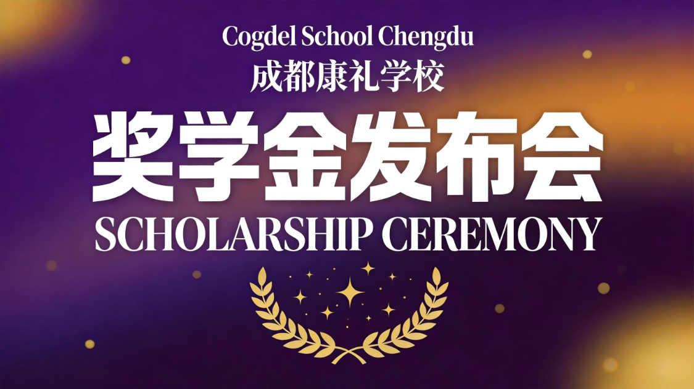
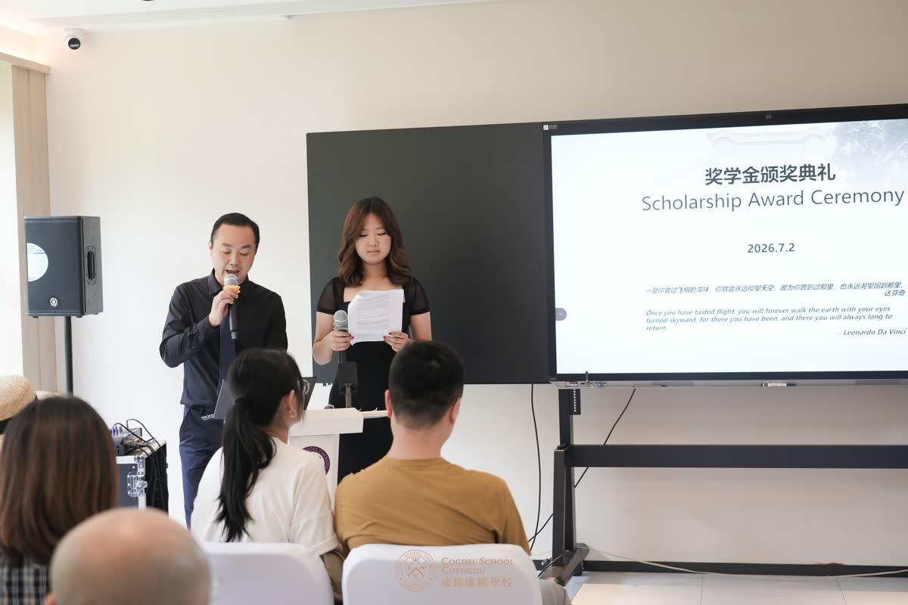
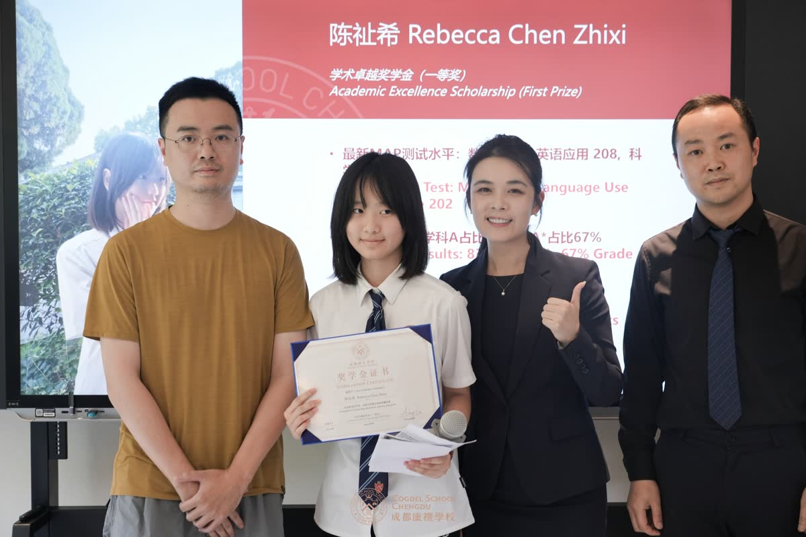
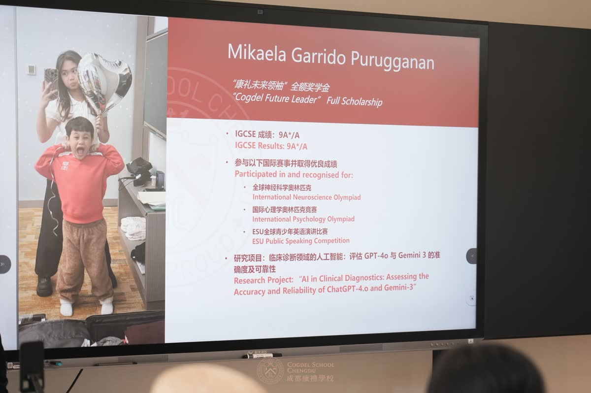
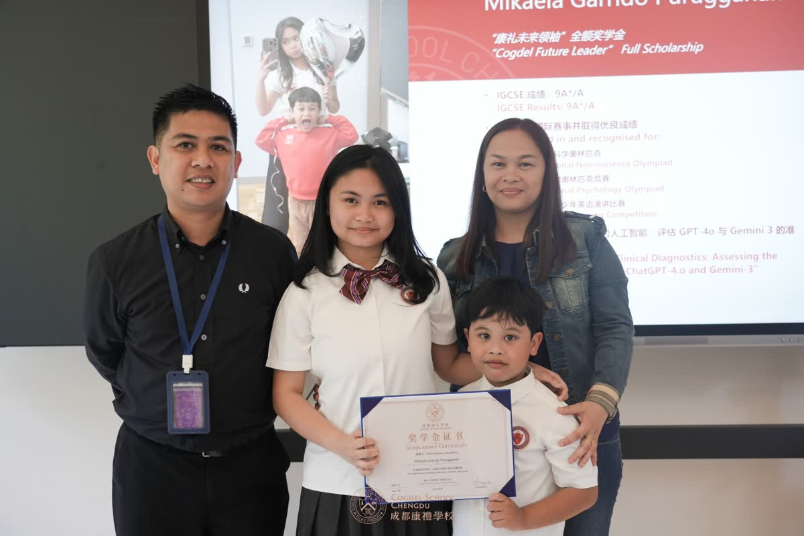
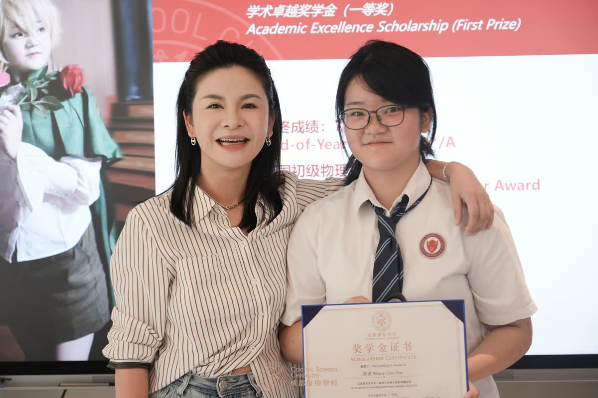
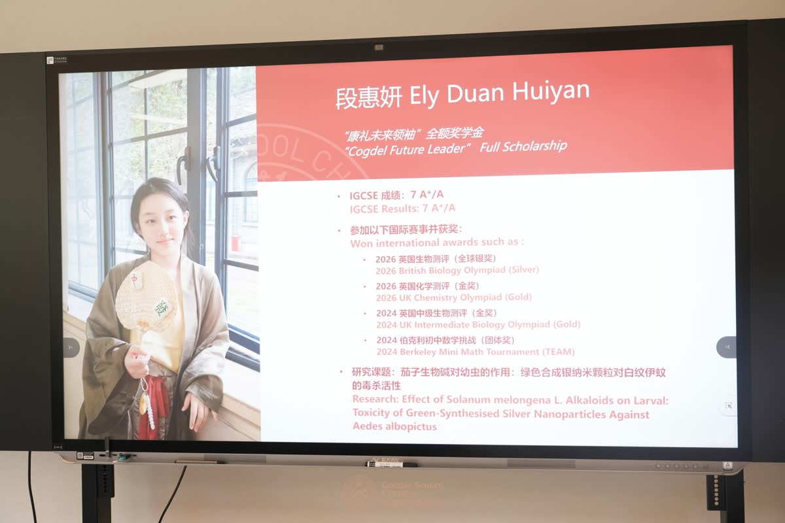
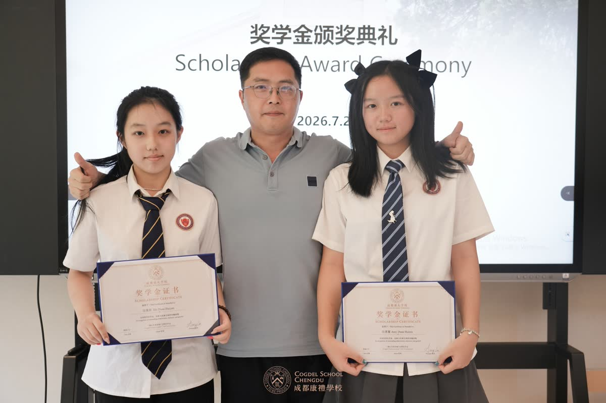
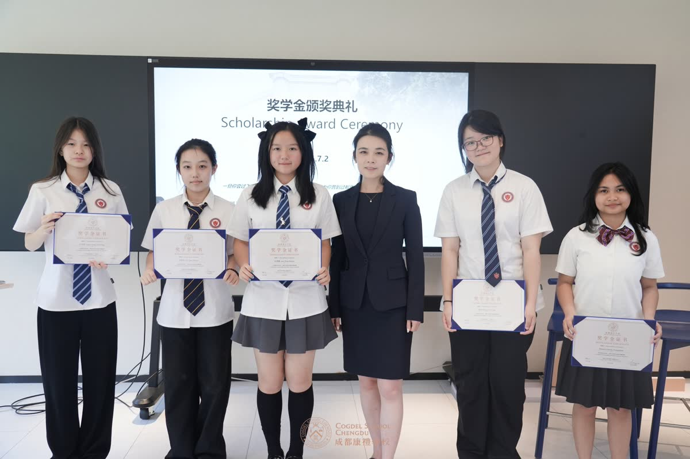

2026年7月2日，成都康礼学校举行「向未来生长」2026奖学金政策发布暨颁奖仪式，正式发布2026版奖学金政策，表彰在学术表现、综合发展、领导力与未来潜力等方面表现突出的学生。
本次发布暨颁奖仪式不仅是一场荣誉授予，更是学校对"什么是有价值的成长"以及"什么样的努力值得被奖励"的一次公开表达。成都康礼学校认为，在AI飞速发展的时代，学校的价值不限于传授知识与训练应试——更在于帮助学生形成独立思考能力、共情力与责任感，以及持续学习与行动的能力。
学校概况
成都康礼学校位于成都市大邑县安仁古镇，是一所K12全寄宿国际化学校。校园坐落于国家5A级旅游景区，拥有80年历史文脉的民国校园。学校以"培养能够自豪行走世界的领袖人才"为办学使命，围绕这一使命建立了覆盖小学至高中一贯制的国际化课程体系。小学阶段融合IB-PYP探究式学习，初中阶段推行中西融合课程，高中阶段开设IGCSE、A-Level及AP等主流国际课程。学校同时强调个性化培养、PBL项目制学习、AI教育及全人教育工程化，通过"8维竞争力成长档案"关注学生在全球视野、学习力、身心健康、内驱力、创新力、领导力、协作力与责任意识等方面的持续发展。
成都康礼学校校长陆琨（Amy LU）在致辞中表示：AI可以帮助我们更快地获取信息、处理数据和解答问题，但真正的教育始终关乎一个完整的个体——如何理解世界、理解和接纳自我、面对失败并继续前行。学校希望学生走出去时，不只拥有一份出色的成绩单，更拥有面向未来的品格与行动能力。



2026版奖学金政策再次强调了成都康礼学校一贯的教育理念：卓越不仅体现在分数上，也体现在品格、创造力、服务精神和对世界的积极影响上。学校通过奖学金制度，支持具备学术潜力、多元才能和成长型思维的学生。奖学金覆盖新生入学、在校学业、特长发展（艺术、体育、科技创新）、领导力与服务，以及毕业升学奖励等不同维度的表彰类别。
成都康礼学校2026奖学金政策要点
新生入学奖学金：每年集中评审两次，分别对应春季和秋季入学，结果原则上于每年1月和7月公布。申请方式：有意向的家庭在对应学段提交入学申请时，在申请表中勾选"申请奖学金"，同时提交近两年成绩单、获奖证书或作品集、推荐信及500字以内的个人陈述等补充材料。学生须先通过学校录取评估，在必要时参加奖学金面试或校长面试。
评选标准：不以单一分数为唯一依据。学术卓越固然重要，但学校同样看重成长过程——既认可以往取得的成绩，也支持面向未来的创造潜力。
获奖学生代表发言


Winnie同学（P9）："在接触IG课程之前，我是一名在体制内勉强保持排名的学生，曾以为学习只能死记硬背、埋头刷题。但这套灵活的教学体系使我改观——IG不是用试卷分数定义我们，它鼓励我们跳出课本独立思考、自由发挥创造力。合理规划时间，在向未来前进的同时不丢下心中的那个小孩，我们完全可以在这套课程里找到滋养自己的成长方式。"
Mika同学（IG）："神经科学教会我人如何思考，公共演讲教会我人如何连接——它们共同告诉我，学习不是拥有所有答案，而是有勇气不断提出更好的问题。"Mika以全英文发表演讲，在去年INO国际竞赛进入半决赛并获全国荣誉，同时在YPSC公共演讲大赛亚洲轮获奖。"我仍然不知道这些兴趣最终会把我带向哪里，也许这正是最令人兴奋的部分。"
仪式现场，获奖学生和家长代表分别分享了自己的成长故事、家庭教育理念。真实的分享让奖学金不仅成为纸面上的经济激励，更成为学生努力、家庭陪伴、教师支持与学校价值观共同凝结的精神见证。
成都康礼学校表示，奖学金不是终点，而是新的起点。学校期待获奖学生在未来的学习生活中继续保持好奇心与行动力，在自己的节奏中发展所长、承担责任、积极影响周围的世界。


未来，成都康礼学校将继续通过更具成长性、更关注多元发展的奖学金政策，与家庭共同支持学生成长为具有优秀品格、并愿意对周围世界产生积极影响的人。
